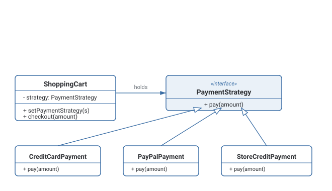

Strategy Pattern
Extracts an interchangeable family of algorithms/behaviors behind a common interface, so the code using them doesn't need to change every time a new variant is added.
Theory
The problem, in plain terms
You're building a checkout flow. Customers can pay by credit card, PayPal, or store credit, and each option has genuinely different logic — different validation, different external API calls, different fee calculations. The obvious first pass is a processPayment method riddled with if (method == "credit_card") { ... } else if (method == "paypal") { ... }. Every time the business adds a new payment option, you're back inside that method, and the branches keep growing alongside the risk of breaking an existing one while editing.
Strategy pulls each branch out into its own class that all implement a common interface, and the checkout code holds a reference to whichever one the customer picked, calling the same method (pay(amount)) regardless of which concrete strategy is plugged in. The checkout code no longer needs to know how each payment method works — only that it can be asked to pay().
How it's built
A Strategy interface declares the operation that varies (pay(amount)). Concrete strategies (CreditCardPayment, PayPalPayment, StoreCreditPayment) each implement it differently. A Context (the ShoppingCart or checkout flow) holds a reference to a Strategy object — set at construction, or swappable later via a setter — and delegates to it instead of implementing the varying behavior itself.
Keep each concrete strategy focused only on its own algorithm — resist the urge to let strategies reach back into the Context's internals beyond what's passed in as arguments.
Building a whole Strategy hierarchy for one or two variants that are unlikely to ever grow — that's ceremony a plain conditional would've handled just as well.
Strategy vs. simple parameters
A common early instinct is "why not just pass a function or a flag instead of a whole class hierarchy?" In languages with first-class functions, a plain function reference genuinely can serve as a lightweight Strategy — the pattern's essence is really about the Context depending on an abstraction for the varying behavior, not the specific mechanism (interface vs. function) used to supply it. The class-based version earns its keep when each strategy needs to carry its own state or when the operation is more than a single pure function.
Where it bites you
If there's only ever going to be one or two variants and they're unlikely to grow, a Strategy hierarchy is over-engineering — a simple conditional is more direct and easier for a new reader to follow at a glance. Also, the Context has to somehow pick which concrete Strategy to use in the first place — Strategy itself doesn't solve that selection problem, and teams sometimes end up reintroducing the very if/else chain they were trying to avoid, just one level up, at the point where the Strategy gets chosen.
Diagram

When to Use
- You have several interchangeable ways of doing the same conceptual operation, and you expect the list to grow.
- You want to swap the algorithm/behavior at runtime, not just at compile time.
- The current implementation uses a growing
if/elseorswitchchain to pick between behaviors, and that chain has to be edited every time a new variant is added.
- There are only one or two variants that are genuinely unlikely to change — a plain conditional is more direct.
- The varying behavior is a single, stateless operation and your language has first-class functions — a plain function/lambda often replaces the whole hierarchy with less ceremony.
What interviewers are actually listening for: recognizing Strategy as "favor composition over inheritance" applied to an algorithm — instead of subclassing a base class per variant, you inject the varying behavior as a collaborator. Also, noticing that Strategy doesn't by itself solve which strategy to pick — that selection logic still has to live somewhere (often a factory), and conflating the two responsibilities is a common design smell interviewers probe for.
Real-World Examples
- Payment processing — different payment methods (credit card, PayPal, store credit) each implementing a common
pay()interface. - Sorting with a custom comparator —
Collections.sort(list, comparator)in Java orsorted(list, key=...)in Python — the comparison logic is a swappable strategy. - Compression algorithms — a file archiver choosing between ZIP, GZIP, or LZMA strategies for the same "compress this file" operation.
- Route calculation in navigation apps — fastest route, shortest distance, and avoid-tolls are each a different routing strategy behind the same "calculate route" call.
- Validation rules — a form or API validating input using a pluggable strategy per field type or per business rule set.
Interview Questions
Click a question to reveal the answer.
What problem does Strategy solve, concretely?
It replaces a growing if/else or switch chain that picks between different algorithms/behaviors with a set of interchangeable classes implementing a common interface, so the code that uses the behavior doesn't need to change every time a new variant is added.
How is Strategy different from just passing a function/lambda?
In languages with first-class functions, a plain function reference genuinely can act as a lightweight Strategy — the essence of the pattern is the Context depending on an abstraction for the varying behavior, not specifically a class hierarchy. Class-based Strategy earns its keep when a variant needs its own state or is more than a single pure operation.
Does Strategy decide which strategy to use?
No — Strategy only defines the interchangeable-behavior structure. Something else (often a factory, configuration, or user selection) still has to decide which concrete Strategy gets plugged into the Context; conflating "define the strategies" with "pick the right one" is a common design smell.
How is Strategy different from State, since both involve a Context holding a reference to an interface implementation?
Structurally similar, but intent differs. Strategy variants are usually chosen once (or explicitly swapped by the client) and don't know about each other. State pattern variants represent a Context's internal state and often trigger transitions to other states themselves as part of handling a request — the states actively participate in moving the Context between states, which Strategy implementations typically don't do.
Code & Output
Same pattern, four languages. Every output shown here was captured from a real run — note the insufficient-funds message on the third checkout, and the successful charge on the fourth against the same, now-depleted balance.